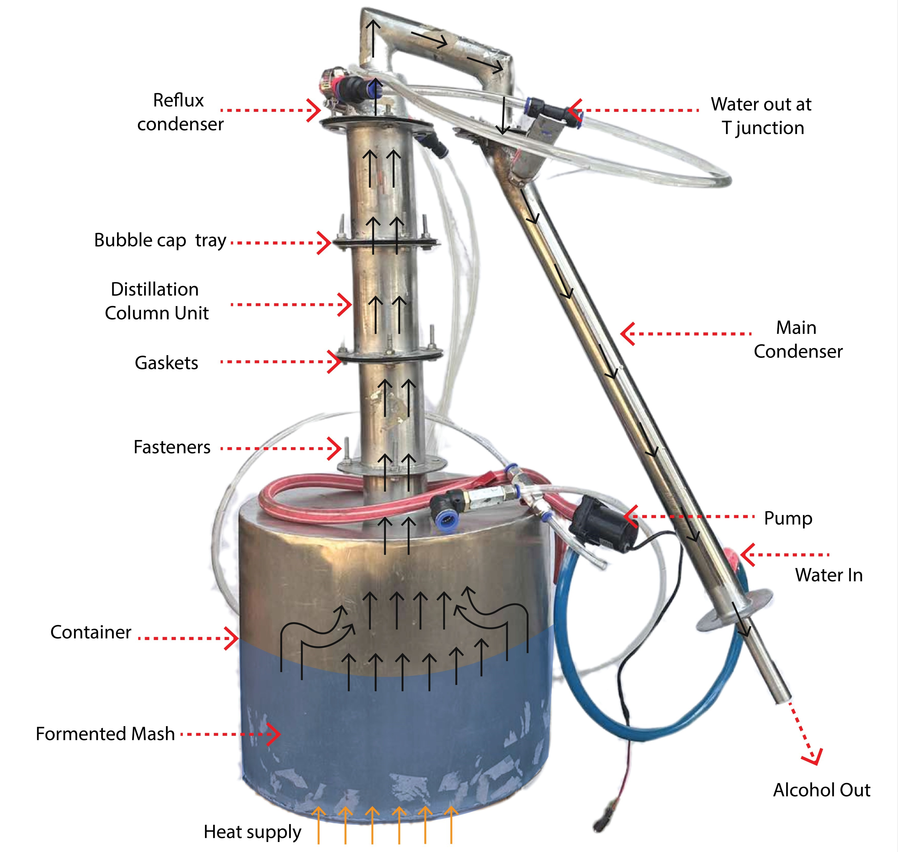

Design, Modeling, and Experimental Assessment of Heat Exchanger-Based Reflux Batch Distillation System for Ethanol–Water Separation

Designed and fabricated a three-tray bubble-cap batch distillation system with a dual-condenser reflux arrangement. Built a Python dynamic model using NRTL thermodynamics, equilibrium-stage analysis and energy balances to estimate heating power and reflux ratio without direct flow measurements.
In the primary run, the model predicted 83.70% v/v distillate at 1,094.49 mL, against 79% v/v and 1,049 mL measured. Across three test runs, NRMSE was 6.66% for concentration and 7.83% for volume.